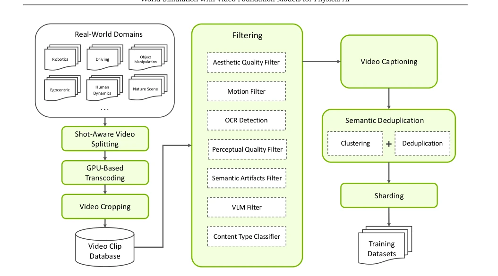
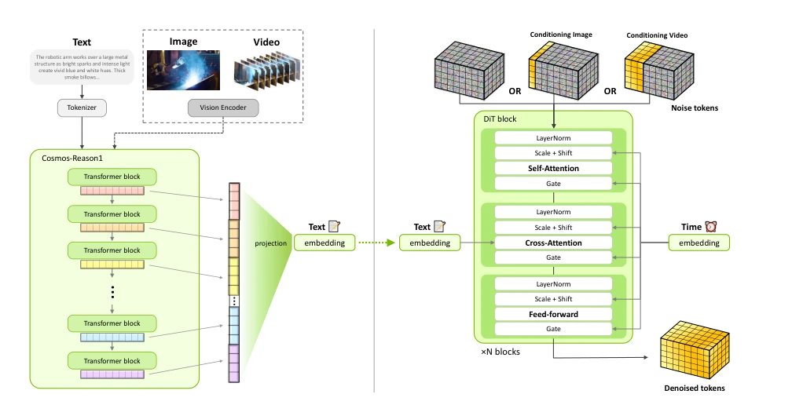
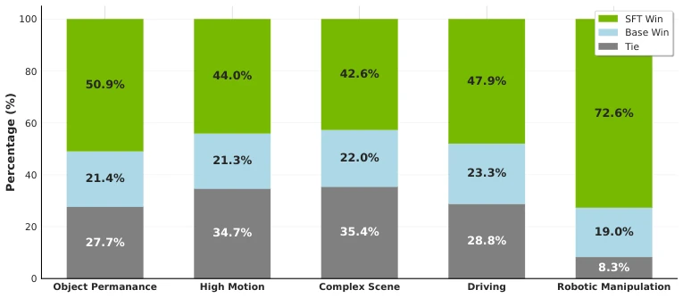
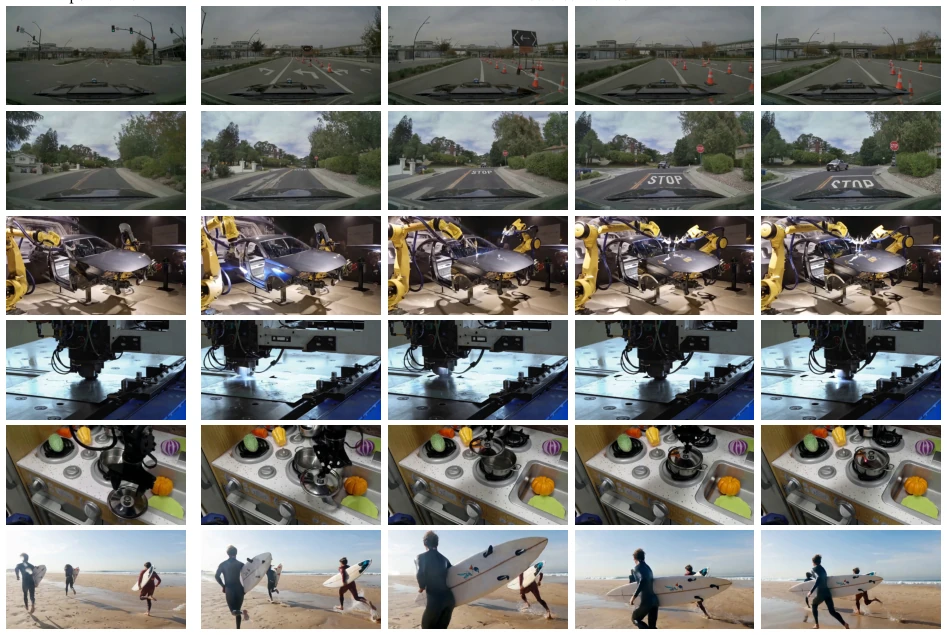
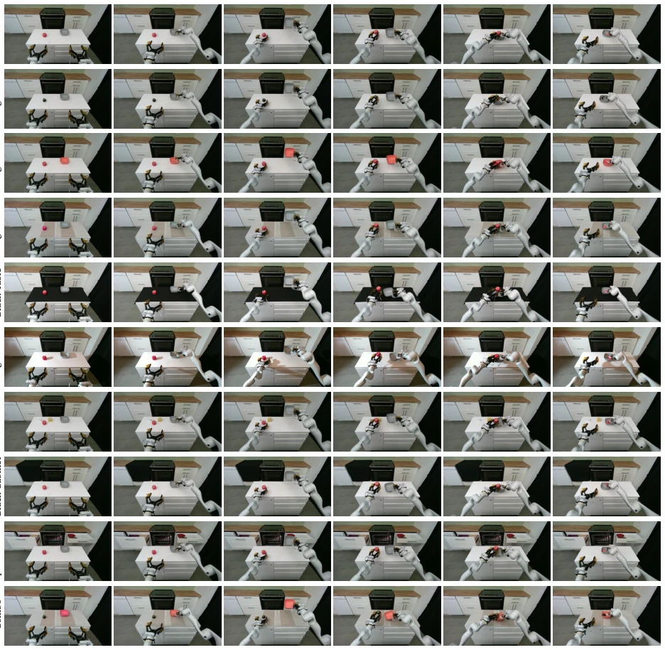
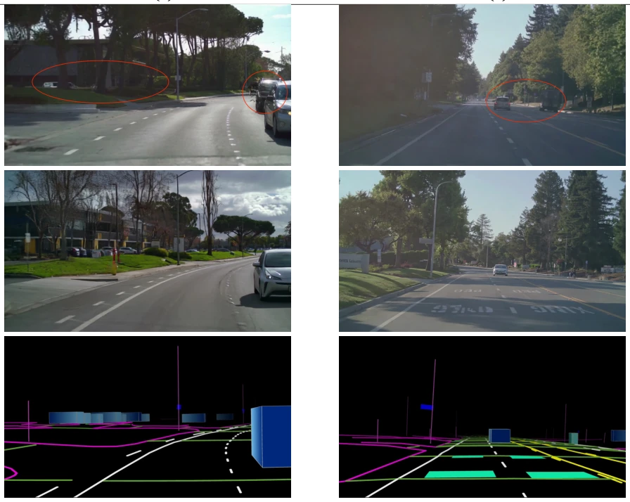
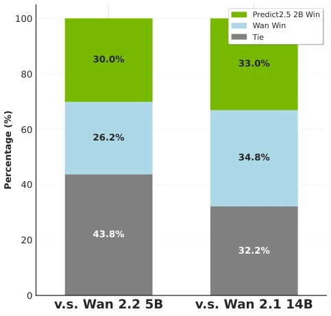
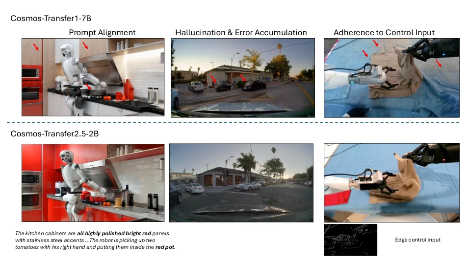
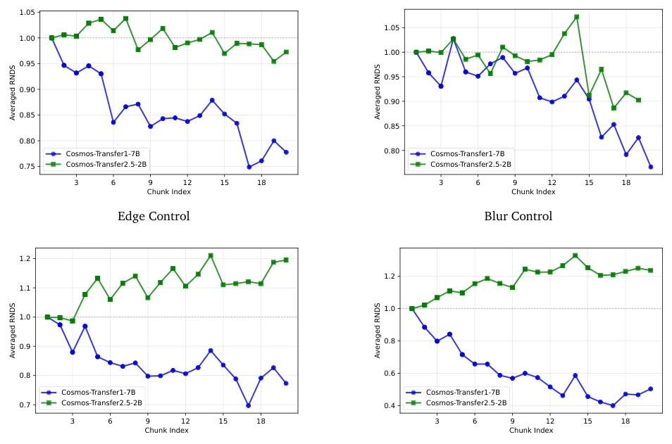
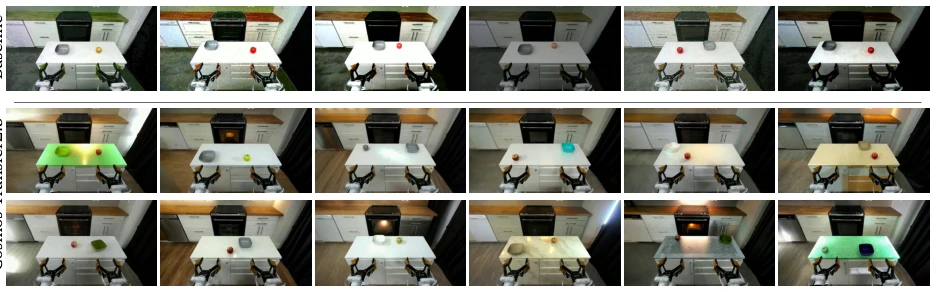

This paper is an "industrialized" resource stacking showcase by NVIDIA in the field of Physical AI. Cosmos-Predict2.5 attempts to unify Text/Image/Video generation using Flow Matching, which is more stable than the previous generation diffusion models, but essentially remains a generative architecture of "changing the soup but not the medicine". Data cleaning is the core; only 4% of 200M videos can enter the training set; this filtering is even harsher than sifting sand, revealing NVIDIA's computing power moat. RL fine-tuning has become standard; using VideoAlign reward model to align human preferences; although it sounds high-end, essentially it is still to reduce hallucinations. Transfer2.5 claims to be 3.5 times smaller than Transfer1 but with better performance; this compression ratio is quite astonishing, possibly due to the ControlNet architecture. However, the model scale is still huge (14B), inference cost is not low, and it relies on NVIDIA internal data; whether it can reproduce the precision of physical interaction after open-sourcing is still questionable. Overall, it is an "industrialized" upgrade of embodied intelligence world models, but there is still a distance from true general physical understanding; do not expect it to directly replace real machine training.
Embodied intelligence systems (Physical AI) face high risks and high costs when training in the real world; early system defects may lead to equipment damage. Therefore, high-fidelity world simulators are needed as safe proxies. Existing work such as [Cosmos-Predict1] (NVIDIA, 2025) is based on diffusion models, but still has deficiencies in video quality, instruction alignment, and physical consistency. The T5 text encoder performs limitedly in physical scene understanding, and the architecture has not unified Text2World/Image2World/Video2World. In addition, Sim2Real transfer requires a more efficient control generation framework. This paper aims to solve the above problems by improving the data pipeline, adopting the Flow Matching architecture, and introducing a VLM dedicated to Physical AI (Cosmos-Reason1), achieving more reliable synthetic data generation and closed-loop simulation.
The overall process is divided into data construction, model architecture, and training strategy. In terms of data, a seven-stage pipeline is used to process 200M raw videos, undergoing strict filtering (retention rate only 4%) and semantic deduplication, covering five major fields such as robotics and driving. The model architecture is based on Flow Matching, predicting diffusion trajectory velocity rather than noise, adopting DiT backbone network, removing absolute position encoding to enhance resolution generalization, using WAN2.1 VAE to compress spatio-temporal features, and integrating Cosmos-Reason1 as text encoder to enhance semantic grounding. Training adopts a progressive strategy: first pre-training Text2Image/Video tasks at 256p to 720p resolution, followed by domain-specific SFT (such as robotics, driving), merging multi-model weights through Model Soup, finally using VideoAlign reward model for RL fine-tuning to align human preferences, and applying Timestep Distillation to accelerate inference.

Figure 1: Our video curation pipeline transforms raw, unstructured video data from diverse real-world sources into a high-quality, annotated, deduplicated, and sharded dataset optimized for large-scale training of video world foundation models.

Figure 2: Overall architecture of [Cosmos-Predict2.5]. As shown on the right, in the latent space, the model applies repeated blocks of self-attention, cross-attention, and feed-forward MLP layers, modulated by adaptive layer normalization (scale, shift, gate) for a given time step 𝑡. We leverage [Cosmos-Reason1] as the text encoder (shown on the left). [Cosmos-Reason1] can also accommodate visual inputs (image and video) beyond text, which we leave for future work.
Experiments cover synthetic data generation, robot policy learning, and driving simulation. Datasets include PAI-Bench and internal robot/driving data (such as AgiBot, Bridge). Baseline comparisons include Cosmos-Predict1, Wan 2.1, and Cosmos-Transfer1. Evaluation metrics include VideoAlign reward score, human preference voting, and RNDS (relative error) for long video generation. Results show that Post-trained Predict2.5 significantly improved rewards on Text2World and Image2World tasks, with higher human voting preference. Transfer2.5 has fewer hallucinations and lower error accumulation in long video generation. Ablation experiments indicate that Model Soup merging is superior to single fine-tuning, and RL fine-tuning effectively improves quality.

Figure 4: Merged model gets the best of all the worlds while maintaining performance on the general domain. Win rate for pretrained is average across three comparisons.

Figure 8: [Cosmos-Predict2.5-2B] post-trained prediction samples on the PAI-Bench dataset.

Figure 13: [Cosmos-Transfer2.5] Real-Robot Policy Rollouts. We present sample [Cosmos-Transfer2.5-2B] policy rollouts under the base setting and nine unseen test-time scenarios.

Figure 15: Comparative controlled generations between [Cosmos-Transfer1-7B-Sample-AV] and [Cosmos- Transfer2.5-2B/auto/multiview]. In example (1), we can observe that [Cosmos-Transfer1-7B-Sample-AV] hallucinates a distorted black car behind the silver vehicle, which is described neither in the text prompt nor in the control video. We can also observe the lack of alignment to the control signal when generating the parked vehicles behind the grassy mounds. In example (2), we can observe that [Cosmos-Transfer1-7B-Sample-AV] renders the vehicle in the central lane driving on the wrong side of the street with an incorrect orientation, as well as a truck instead of a pedestrian close to the sidewalk. All these inconsistencies are resolved in [Cosmos-Transfer2.5-2B/auto/multiview].
其他图片Other Figures

Figure 7: Across a diverse set of prompts, post-trained [Cosmos-Predict2.5-14B] is preferred more often than Wan 2.1 14B, and achieves on par performance to Wan 2.2 27B-A14B, despite having only half the parameter count.

Figure 9: Sample comparison results of [Cosmos-Transfer2.5-2B]. Compared to [Cosmos-Transfer1-7B], [Cosmos-Transfer2.5-2B] has better prompt alignment, better adherence to control input, and less hallucination and error accumulation (especially for long videos).

Figure 10: Error accumulation for long video generations. These plots show the Normalized Relative Dover Score vs Chunk Index for auto-regressive multi-trunk long video generation where each trunk is 93 frames. As shown, for all four control modalities (edge/blur/depth/seg), compared to [Cosmos-Transfer1-7B] (blue curves), [Cosmos-Transfer2.5-2B] (green curves) has much less reduction in RNDS along the chunk index dimension, which shows less hallucination and error accumulation for long videos.

Figure 12: Real-Robot Data Augmentation Gallery. We show the baseline (top row) and [Cosmos-Transfer2.5- 2B] (bottom two rows) data augmentation samples.